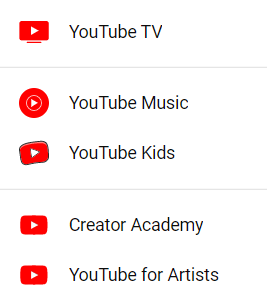
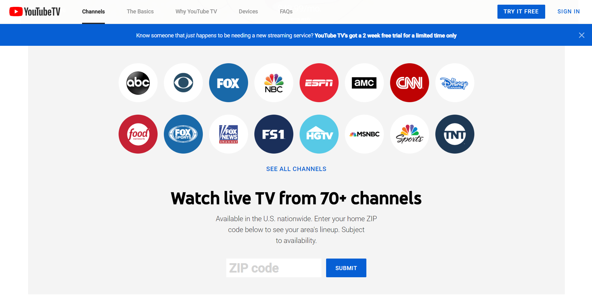
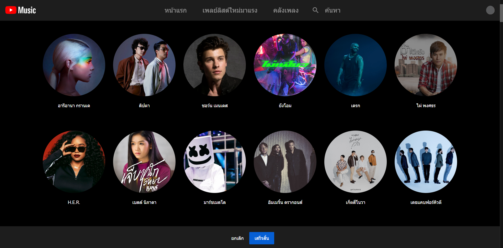

YOUTUBE
ยูทูบ ตามสำเนียงอเมริกัน หรือ ยูทิวบ์ ตามสำเนียงบริเตน ( YouTube ) เป็นเว็บไซต์เผยแพร่วิดีโอโดยมีสำนักงานอยู่ที่แซนบรูโน, แคลิฟอร์เนีย สหรัฐอเมริกา เว็ปไซต์ดังกล่าวถูกสร้างขึ้นมาจากอดีตพนักงาน 3 คนในบริษัทเพย์แพล อันประกอบด้วยแชด เฮอร์ลีย์ , สตีฟ เชน และ ยาวีด คาริม ในเดือนกุมภาพันธ์ 2548 ในเดือนพฤศจิกายน 2549 ยูทูบถูกกูเกิลซื้อไปในราคา 1.65 พันล้านเหรียญสหรัฐ. ยูทูบเป็นหนึ่งในบริษัทย่อยของกูเกิล เว็บไซต์ยังสามารถให้ผู้ใช้งานสามารถอัปโหลด ดู หรือแบ่งปันวิดีโอได้. โดยหน้าตาของเจ้ายูทูบเป็นดังนี้
ประวัติยูทูบ
ยูทูบก่อตั้งขึ้นโดยพนักงานของบริษัทเพย์แพล ซึ่งเป็นเว็ปไชต์สำหรับการแบ่งปันวิดีทัศน์ โดยที่สมาชิกของยูทูบสามารถอัปโหลดและสำรวจวิดีทัศน์ได้ โดเมนเนมของยูทูบมีว่า "www.youtube.com" ซึ่งเผยแพร่ครั้งแรกในวันจันทร์ ที่ 14 เดือนกุมภาพันธ์ ค.ศ. 2005 เวลา 9:13 นาฬิกา
ยูทูบก่อตั้งโดยแชด เฮอร์ลีย์, สตีฟ เชน และยาวีด คาริม โดยทั้งหมดเป็นพนักงานฝึกหัดที่บริษัทเพย์แพล เพื่อที่จะเข้าเป็นบุคลากรของบริษัทเพย์แพล โดยเฮอร์ลีย์ได้เข้ามหาวิทยาลัยอินเดียดาแห่งเพนสิเวอร์เนีย ด้านการออกแบบ เชนกับคาริมศึกษาอยู่มหาวิทยาลัยอิลลินอยส์ เออร์แบนา-แชมเปญจน์ ด้านวิทยาศาสตร์คอมพิวเตอร์ โดยสำนักงานแห่งแรกของยูทูบอยู่ที่ข้างบนร้านพิซซ่า และร้านอาหารญี่ปุน ในซานเมเทโฮ รัฐแคลิฟอร์เนีย
โดเนนเมนเริ่มแรกคือ เปิดใช้งานครั้งแรกเมื่อวันที่ 14 กุมภาพันธ์ ค.ศ. 2005 พร้อมกับการรวมวิดีทัศน์ครั้งแรกเมื่อวันที่ 23 เมษายน ค.ศ. 2004 เป็นการเริ่มค้นคลิปวิดีทัศน์แห่งแรกในยูทูบ ชื่อวิดีทัศน์ Me at the zoo เมื่อวันที่ 23 เมษายน ค.ศ. 2005 โดยมีผู้ร่วมก่อตั้งเว็บไซต์ ยาวีด คาริม ถ่ายที่สวนสัตว์ซานดิอิโก
Youtube Product
YouTube Product หรือผลิตภัณฑ์จากยูทูบ ซึ่งจะมีทั้ง Youtube TV, Youtube Music, YouTube Kids, Creater Academy และ Youtube for Artist
YOUTUBE TV คืออะไร
Youtube TV ก็คืออีกหนึ่งผลิตภัณฑ์ของ Google ที่ทำมาสำหรับผู้ที่ต้องการดูทีวีด้วยความละเอียดสูงระดับพรีเมียมจากลิตรายการดังๆมากมายอย่าง ผู้ผลิตรายการ Fox, ABC, CBS, NBC News, ESPN, Bravo, Disney Channel, MSNBC, National Geographic, Fox News และอื่นๆมากมาย เพียงผู้ใช้จ่ายเพียงเดือนละ 1,200 หรือ (35 เหรียญ) เครื่องบันทึกภาพแบบคลาวด์โดยไม่ จำกัด พื้นที่เก็บข้อมูล DVR การบันทึกแต่ละครั้งจะถูกเก็บไว้ 9 เดือน. สามารถรับชม YouTube TV ได้ทั้งอุปกรณ์สมาร์ทโฟน แท็บเล็ด และคอมพิวเตอร์หรือรับชมผ่านจอทีวิขนาดใหญ่ด้วยอุปกรณ์เสริม Google Chromecast หรือ Apple Airplay ที่เป็นอุปกณ์ส่งสัญญาณจากมือถือเข้าไปยังทีวีได้อย่่างง่ายดายและคมชัด ผู้ใช้ยังสามารถพบกับช่องรายกายแต่ละประเภทได้
- โดยเงื่อนไขของ Youtube TV มีดังนี้
- สามารถใช้งาน YouTube TV ได้บัญชี 6 บัญชีต่อครัวเรือน ทุกคนได้รับการเข้าสู่ระบบคำแนะนำและเครื่องบันทึกภาพของตนเอง
- ไม่มีข้อผูกมัดไม่มีสัญญา ยกเลิกได้ตลอดเวลา
YOUTUBE MUSIC คืออะไร
YOUTUBE MUSIC เป็นบริการฟังเพลงจาก YouTube ซึ่งเป็นคลังเพลงใหญ่อันดับต้นๆ ของโลก เพลงไหนที่ว่าเก่า ศิลปินวัยเก๋าก็ยังมีให้ฟัง แถมเพลงหรือซิงเกิ้ลใหม่ๆ ที่ปล่อยกันทาง YouTube ก็มาทันทีด้วย มากไปกว่านั้นคือพวกเพลงต่างๆ ที่มีการไป cover นั้นก็มีให้ฟังด้วย ใครสร้าง playlist อะไรเอาไว้ก็สามารถไปกดฟังได้เลย แต่บริการ YouTube Music นั้นจะมีโฆษณาแทรก (อารมณ์ประมาณ JOOX นะแหละ) และไม่สามารถปิดจอเล่นเพลงได้ ถ้าอยากปิดโฆษณาและปิดจอเล่นเพลงก็ต้องไปสมัคร YouTube Music Premium
วิธีสมัคร YOUTUBE MUSIC PREMIUM
ค่าบริการของ YouTube Music Premium ก็แบ่งออกตามระบบปฏิบัติการเช่นกัน
WEBSITE / ANDROID
- แบบบุคคล เดือนละ 129 บาท
- แบบครอบครัว เดือนละ 199 บาท (ใช้ร่วมกันได้ 6 คน)
- โปรสำหรับนักเรียน / นักศึกษา เดือนละ 65 บาท
IOS
- แบบบุคคล เดือนละ 169 บาท
- แบบครอบครัว เดือนละ 259 บาท (ใช้ร่วมกันได้ 6 คน)
- โปรสำหรับนักเรียน / นักศึกษา **ยังไม่มา**